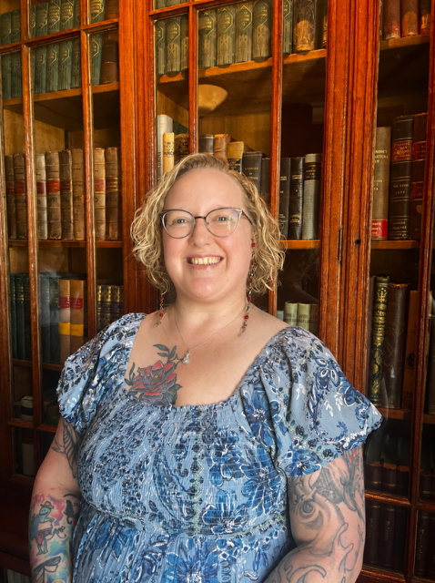

The Person Behind the Pages
About the Founder
I’m Lindsay, a Library and Information Science student at the University of Southern Mississippi with a passion for outreach librarianship, intellectual freedom, and making books accessible to everyone.
My experiences living among different communities have fostered in me a deep appreciation for community and belonging. I believe libraries are uniquely positioned as bastions of belonging, serving as community hubs that advance literacy and welcome people from all backgrounds.
One More Page began as part of my senior capstone project, but I hope to keep it running well beyond graduation. This initiative aims to serve people who may face barriers to recreational reading because everyone deserves the opportunity to enjoy a book.
Inspired by librarian S. R. Ranganathan's second law, One More Page embraces a simple, inclusive philosophy: Every reader their book.
For questions or information about community partnerships, please contact me at lindsay.klug@usm.edu .
Back to Home